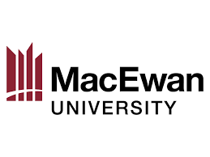

Education
Data Analytics
Post graduate diploma, NAIT class of 2023-2024
The Data analytics course at NAIT is a one year post graduate program focused Python, SQL, and Tableau.
In addition to coding, the course also explores concepts such as data governance, business use cases, meaningful reporting, and efficient workflows.
Like all of NAITs programs, the focus is on practicality and meeting the requirements of local firms.
The course is capstoned with a four month project where we acted as consultants for a real local company,
analyzing their raw data from the customer service app and organizing it into meaningful findings and recommendations.
Bachelors of Commerce
Major in International Business, MacEwan University class of 2020-2021
A four years Bachelors program focused on internaltion business and supply chain management.
A large emphasis is placed on giving the students the ability to communicate successfully in a business setting, with presentations and reporting being required for the majority of course work.
Between case studies, marketing projects, and business research assignments, I believe the course provided a solid foundation on how to effectively communicate findings
with managment, coworkers, and shareholders.